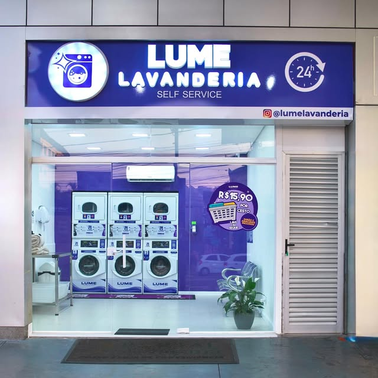
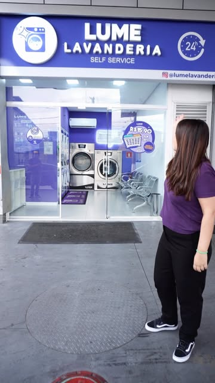
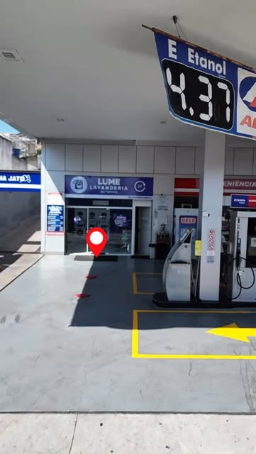
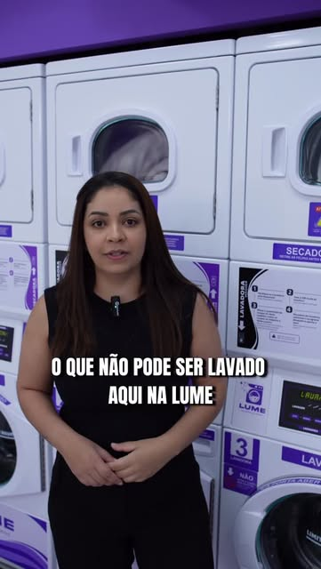

Lavanderia self service dentro do Posto Alê, na Rua Benjamin Pereira, 346. Aberta 24 horas: você lava quando der na sua rotina.

Três motivos que fazem diferença na semana de quem mora perto.
Trabalhou até tarde? Saiu cedo? É só chegar. A lavanderia não fecha — nem de madrugada, nem no fim de semana.
Fica dentro do Posto Alê, na Rua Benjamin Pereira, 346. Aproveita que já passa ali.
Self service: escolhe a máquina, acompanha o ciclo e leva a roupa pronta no mesmo dia.
Máquinas de lavar e secar para a roupa do dia a dia, cama, banho e peças maiores.
Fotos do Instagram da própria lavanderia.



Dentro do Posto Alê, na Rua Benjamin Pereira, 346 — Jaçanã, Zona Norte de São Paulo. Aberta 24 horas, todos os dias.
Confirmar a localizaçãoManda mensagem se tiver dúvida sobre máquina, tempo de ciclo ou o que dá para lavar.
Falar com a Lume